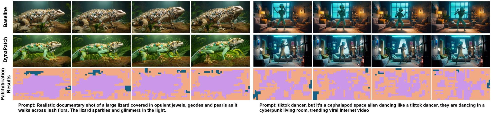

DynaPatch: Content-Aware Dynamic Patchification for Efficient Video Diffusion
A content-aware dynamic patchification framework for video diffusion transformers. A lightweight router predicts region-wise patch sizes from 3D VAE latents, allocating fine-grained tokens to complex motion regions while coarsening static backgrounds. Achieves 1.3–1.8x inference speedup with minimal quality degradation on standard benchmarks.